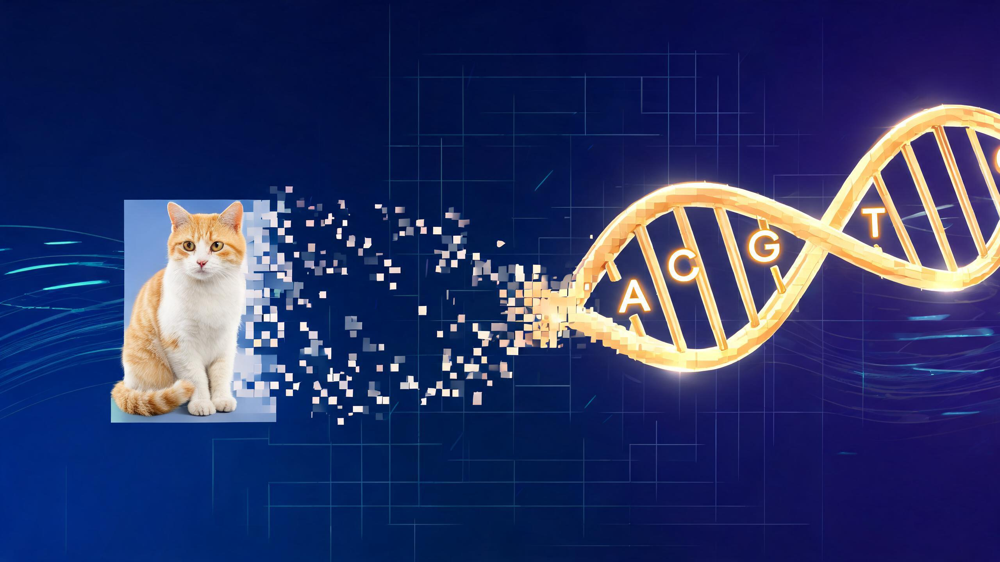

一克 DNA 能装下整个人类互联网的数据流量。2017 年科学家把一个操作系统和一部电影写进 DNA 分子，完美读回--用的就是你即将亲手操作的那套算法。

DNA 是地球上最致密的信息载体：每克 215 PB，距理论上限只差 14%。它比硬盘小一亿倍，比闪存耐用一万倍。问题是--怎么把 0 和 1 写进 A、T、C、G 四个字母，还能一字不差地读回来？
下面从选一段数据开始，分四步把它编码成碱基，再模拟测序丢包，看冗余如何救场。
DNA 存储不挑格式--文字、照片、操作系统都是一串字节。选一个预设或自己输入，我们会把它拆成字节。
DNA存储
Hello,DNA世界！
一段完整的句子
笑脸 24×24
缩放到 24×24
输入你自己的
编码分四步：切分段 → 生成液滴 → 转碱基 → 体检筛选。点按钮逐步执行，每步看到中间结果。
把字节序列按固定长度切段，末段补 0。每段是一个独立的数据块。
点击「切分段」查看分段结果
DNA 测序不完美：部分 oligo 丢失（dropout），部分碱基突变（mutation）。拖滑块调节损坏程度，点按钮模拟。
先完成编码，再模拟测序信道
译码器像剥洋葱：先找只连着 1 个未知段的液滴，解出该段；再把它从其他液滴里消去，如此反复，直到全部解出或卡住。
模拟测序后，点下方按钮开始解码
冗余越高越能扛丢包，但也费更多 DNA。蒙特卡洛模拟：在不同冗余率下各跑 30 次，看成功率怎么变化。拖滑块调节信道丢失率。
论文实测密度 215 PB/克。输入想存的数据量，算算需要多少 DNA--质量小到看不见。
本演示的所有数字均来自以下论文，未做任何夸大或编造。
Yaniv Erlich & Dina Zielinski. DNA Fountain enables a robust and efficient storage architecture. Science, 2017-03-03, 355(6328):950-954.
DOI: 10.1126/science.aaj2038存储密度 215 PB/克；实测写入并完美读回 2,146,816 字节（含一个完整图形操作系统和一部电影）；密度距理论上限仅差 14%；经多轮 PCR 扩增后仍完整取回。
来源：Science 355(6328) 正文及补充材料核心是 LT 喷泉码 + Robust Soliton 度分布 + 生物学筛选。本演示默认 GC 45%~55%、同碱基重复 ≤ 3，文献常用区间为 GC 40%~60%、重复上限 3~4，默认值非论文原值。
来源：Luby LT Codes (2002) + DNA Fountain 筛选策略本页为教学演示，算法经简化以便浏览器实时运行：种子直接嵌入 oligo、白化平衡碱基、单字节 checksum 检测突变。真实系统还含地址索引、纠错内码、旋转编码等工程细节。
来源：本演示实现